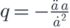
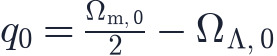
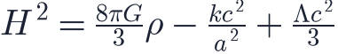
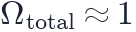

In this lesson you will learn
|
Expecting deceleration
Throughout the 20th century, cosmologists expected gravity to be slowing the expansion. The big question was how much: enough to stop it one day, or not? Two teams set out to measure the deceleration using Type Ia supernovae as standard candles at high redshift: the Supernova Cosmology Project led by Saul Perlmutter and the High-Z Supernova Search Team led by Brian Schmidt and Adam Riess.
The surprise of 1998
The idea is simple. For a given redshift, the distance to a supernova depends on how the expansion rate changed in the past:
- in a decelerating universe, the expansion was faster in the past, so less time has passed and the supernova is relatively close and bright;
- in an accelerating universe, the expansion was slower in the past, so light has travelled longer and the supernova is farther and fainter.
Both teams found that supernovae at are fainter than expected: fainter even than in a completely empty universe, whose expansion never slows down, and roughly 40% fainter than in the matter-only universe many cosmologists favoured. The expansion is accelerating. Perlmutter, Schmidt and Riess received the 2011 Nobel Prize in Physics for the discovery.
The deceleration parameter
Cosmologists quantify acceleration with the deceleration parameter

(the minus sign is historical: people expected deceleration and wanted a positive number). For matter and a cosmological constant today,

With and we get . The negative sign means acceleration.
What causes acceleration? The acceleration equation says |
Try it: Expansion History Explorer Cross the line where ΩΛ = Ωm/2. On one side the universe decelerates today, on the other it accelerates. |
Einstein's cosmological constant
In 1917 Einstein applied general relativity to the universe. Believing the
universe to be static, he added a term  , the
cosmological constant, to his equations to balance
gravity. After the discovery of expansion he abandoned it; according to George
Gamow, Einstein called it his "biggest blunder".
, the
cosmological constant, to his equations to balance
gravity. After the discovery of expansion he abandoned it; according to George
Gamow, Einstein called it his "biggest blunder".
The cosmological constant is back. In the Friedmann equation it acts exactly like
a fluid with constant density and  :
:

Vacuum energy and a huge puzzle
A natural physical interpretation of  is the energy of empty space.
Quantum physics says that the vacuum is not truly empty: fields fluctuate even in
their lowest energy state, and this energy should gravitate.
is the energy of empty space.
Quantum physics says that the vacuum is not truly empty: fields fluctuate even in
their lowest energy state, and this energy should gravitate.
The worst prediction in physics Naive estimates of the vacuum energy from quantum field theory exceed the observed dark energy density by up to 120 orders of magnitude. Why the observed value is so tiny, yet not zero, is one of the deepest unsolved problems in physics. |
Independent evidence
Supernovae are not the only evidence. Dark energy is required by several independent observations:
- Flatness plus low matter density. The CMB shows space is flat, so

. Galaxy clusters and the CMB give . The remaining 0.7 must be something else. - Baryon acoustic oscillations. A standard ruler imprinted in the distribution of galaxies measures the expansion history and agrees with acceleration.
- The age of the universe. With dark energy, the universe is about 13.8 billion years old, comfortably older than the oldest stars.
- The growth of structure. Galaxy clusters formed at the rate expected when dark energy slows the growth of structure at late times.
Is it really constant?
A cosmological constant has exactly  forever. Alternatives, such as a
slowly evolving field called quintessence, would have
forever. Alternatives, such as a
slowly evolving field called quintessence, would have  changing with time.
Recent results from the Dark Energy Spectroscopic Instrument (DESI) hint that
dark energy may evolve, but the evidence is not yet conclusive. Upcoming surveys
by Euclid and the Vera C. Rubin Observatory will test this.
changing with time.
Recent results from the Dark Energy Spectroscopic Instrument (DESI) hint that
dark energy may evolve, but the evidence is not yet conclusive. Upcoming surveys
by Euclid and the Vera C. Rubin Observatory will test this.
The future of an accelerating universe
If dark energy is a cosmological constant, the universe expands exponentially forever. Distant galaxies will eventually recede beyond our view, and in about a hundred billion years only our own merged Local Group will remain visible. Lesson L6.10 follows this story to its end — and to the alternatives, if dark energy is not quite constant.
Remember this
|